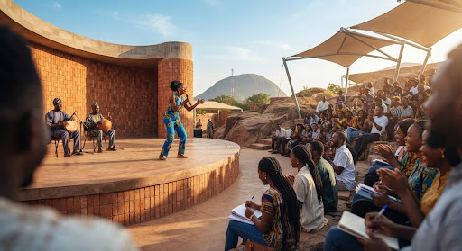
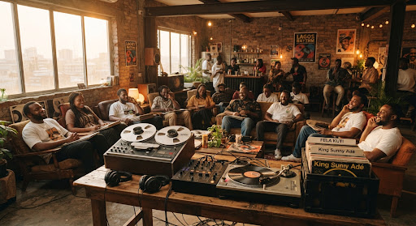
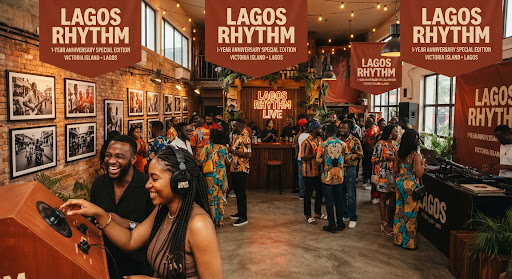

Born From
This Ground
An anniversary publication by Lagos Rhythm, October 2026.

“The foundations were always here.”
Nothing New Comes From Nowhere

Writers, instrumentalists and spoken word artists in a room together. The oldest job in this essay is happening here: someone describes a place to a person who has not seen it.
In the second century, a Greek traveler named Pausanias walked across Greece and wrote down what he saw: temples, statues, local myths, place by place, across ten books meant for the next person to make the same journey. Historians call it the first travel guide. When archaeologists later dug at Olympia and Delphi, they often found that he had the details right.
Strip away the papyrus and look at the job. Someone describes a place to a person who hasn’t seen it yet. The tourist pamphlet does that work today, and so does the app that tells you what a market sells before you land. The containers have changed again and again, but the job remains the same.
That should humble anyone building in tourism technology now. To call a platform innovative is often to claim the need behind it is new, and it rarely is. More often, someone has found a fresh container for a need that was already being met, quietly, by people who left no company behind to take the credit.
This raises a question worth asking before building anything: who was doing this work first?
Before We Called It New

A listening room in Yaba. What is carried by voice asks nothing of a server — only someone willing to receive it.
Ask a Yoruba elder where a family comes from, and you may not get an address. You may get a name, then oríkì: a praise poem recited from memory that calls out the ancestors, the town they founded, the trade they practiced, and the hardships that shaped the heroes. For centuries, it lived only in voices. Scholars have long treated it as a genealogy and historical evidence of a place carried by memory.
That is infrastructure, but it never looked like it because it lives in a voice, and not on a server. The Yoruba, Igbo and Hausa communities keep their past in voices, in their ways. Here, we follow Oríkì.
UNESCO’s 2003 Convention on Intangible Cultural Heritage (ICH) exists partly because knowledge like this goes unrecognized until it starts to disappear. It describes heritage as something communities keep recreating in response to their surroundings, a living practice rather than a relic waiting to be catalogued.
Call this the recognition gap: the distance between what works and what is recognized as working. Much of what later came as an app or a wayfinding tool was, long before, a person’s daily practice. Technology’s contribution is rarely invention. More often it is visibility extended to something already doing its job in the dark.
“Call this the recognition gap: the distance between what works and what is recognized as working.”— Born From This Ground, Chapter 02
When Home Has No Coordinates

Photographs, listening kiosks, a crowd in Victoria Island. Close enough to see the place, and still standing at a distance from it.
More than 17 million people of Nigerian origin live abroad, according to Nigeria’s diaspora commission. World Bank figures show they send home billions of dollars a year. Those are figures about money. Look closer, and they are figures about attention.
Some of that money feeds families directly. Beneath it runs something odder; a bond to one particular piece of ground that survives a generation, sometimes two, in people who have never stood on it.
Not everyone relates to Lagos the same way. Those who lived here and left carry a city that has kept changing without them. Those born abroad carry something else, and it isn’t nostalgia, which needs a loss to grieve. They inherit a relationship they never built: a Lagos assembled from a parent’s stories, an old song half remembered, a dish that must taste exactly one way, a Yoruba, Igbo or Hausa phrase understood in outline and never fully spoken. The place is real. The connection is real. The experience in between? That is often missing.
Tourism has little language for this. It assumes travel repairs an absence. You left; now you’ve returned. But how do you return to a place you never were? Whether they left Lagos or were only ever told about it, many are simply not coming back. They are checking. They want confirmation, or correction, a chance to hold the picture they carry up against the place itself.
The City Knows the Way
Lagos, a Yoruba city that Igbo, Hausa, and settlers from every direction have also made home, gets to work every morning on routes nobody drew. A danfo conductor calls the stops as the bus moves: “Oshodi! Oshodi!” Market layouts follow a logic that makes perfect sense to the traders who built them and to almost no one else. Outsiders call it chaos. It is closer to intelligence spread across thousands of unwritten decisions that somehow line up.
Making that readable to a stranger is hard, and it costs something. Street Rhythm, a video-guided navigation platform for the informal transport system, makes that intelligence legible to someone who didn’t grow up in it. But a recorded guide is a snapshot. It shows the route as it ran on the day it was filmed. A conductor can steer around a flooded road in real time. A guide, however carefully made, cannot know about the flood until someone updates it.
Build the tool anyway. Opening a city to someone who could never read it is real innovation, even if the need behind it is old. What the tool adds is reach. What it spends is responsiveness. The trade is worth making, and an honest builder says what is being paid out loud.
A Place Is Made of People

An engineer at the console in Surulere. Every recorded experience has a source: a particular person who must be asked, credited, and given something in return.
In 1897, at the Brussels International Exhibition, King Leopold II had three fenced “villages” built in the park at Tervuren where he forced 267 Congolese men, women and children to live while visitors watched. Seven of them died before the exhibition ended.
It was not an isolated case. In Paris in 1889, an exposition drew some 30 million visitors, and one of its main attractions was a so-called “Negro village” where about 400 people were put on display.
Leopold saw the exhibition as propaganda for his colonial project, but its form is one tourism still knows: a distant culture brought within reach of people who would never travel to it. The wish to do that is ordinary. What matters is what was done with it: no consent, no credit, nothing returned to the people on display.
That history sets a useful bar. A place is made of people, quite literally. Whatever knowledge, memory, or presence gets packaged as an experience has a source, a particular person who holds it. That person must be asked, credited, and given something in return. Otherwise, what is built is extraction with better manners. Call it the source test: consent, credit, return.
UNESCO’s framework insists that communities decide for themselves what counts as their heritage. The trader who has worked the same stretch of road for thirty years, and the elder who remembers a neighborhood’s older name, hold something no visiting crew can gather in an afternoon.
That is why we created Storywell, an initiative for co-creation, where the people who hold a place’s stories help make the tours that carry them, and are fully credited as their source. Return reaches further than one tour. The same tours are repurposed for social impact, taken to marginalized communities. The work stays original because it remains theirs.
“Call it the source test: consent, credit, return.”— Born From This Ground, Chapter 05
What If the Place Could Travel?

Warm light and a record mid-mix. On the street the greetings, the music and the smell of suya arrive together; a written account can only ever name them in a row.
A photograph of a Lagos street at dusk keeps the light and loses the rest: the long, warm greetings traded across a doorway, the joke that sets a whole bus laughing, the music drifting out of a shop, the smell of suya on the grill. A written description can name each of those things, but it names them in a row, but on the street they arrive together. Both are honest attempts, but neither closes the distance between a person and a place they cannot reach.
That distance is real, and mostly practical. A trip to Lagos from Toronto, London or Houston takes money, time and paperwork. A tourist e-visa alone costs a visitor from the United States $180 before a flight is booked. For some international visitors, the cost of obtaining a Nigerian tourist visa is accounted for before booking flights and accommodation. More often than not, these costs leave a place reachable only by travel unseen by people who care about it.
Virtual tourism changes the arithmetic. One tour, made once with the people who know the place, can be walked by many people on the same afternoon. It can be shared with a parent who can no longer travel, or brought into a classroom. And it keeps what a photograph drops: the order in which a person moves through a place, the sounds around a moment, a story told by the one who lived it. It is more effective because it holds more of the place, and more efficient because it travels farther for less.
A virtual tour complements being there in person; it does not compete with it. For someone who can make the trip, it is a way in, and they arrive already knowing what to look for. For someone who cannot, or not yet, it is a genuine encounter with the place. Lagos Rhythm’s digital experience player is made for both. It widens the circle of people who get to meet the place.
The Future Was Here First
A Yoruba proverb says, “When a youth falls he looks ahead, and when an elder falls he looks behind.” Technology is the youth. It falls forward, certain that progress means leaving things behind. The elder turns around to see what he tripped on, and what he can still use.
Little that lasts is built by leaving things behind. What lasts is usually old: an informal, unrecognized capability finally given a form that takes it further. Oríkì does not need a database to take its place. It needs a form that can reach a child in Toronto or Peckham, with the elder still named as its keeper. The trader’s knowledge of a market’s history can’t be improved by anyone else’s hands; what it lacks is a channel that credits the person who holds it and amplifies what they know. And the Lagos that diaspora children inherit through stories asks for little: something solid enough to test itself against.
Most of these systems were never broken. They ran at a scale and in a form that kept them invisible from outside. When change comes well, the knowledge is extended rather than replaced. What changes is who gets to reach it, and whether those who held it first are still recognized as the source once it travels farther than they could carry it.
“When a youth falls he looks ahead, and when an elder falls he looks behind.”— Yoruba proverb, cited in Chapter 07
Born From This Ground
A year in, what we have built is like a new house built from materials that were already here. The stories people carry, the routes the city runs on, the markets, the songs, the elders who remember. We did not import an idea and set it down in Lagos. The idea was born here, and so was the way we built.
This is what this publication claims. Innovation is real, and it is rarely the start of anything. It is what happens when things that already exist are joined in a new way, brought to people who could not reach them, and given a form that lets them travel. The foundations were always here. The work is in what gets built on them, and for whom.
The questions this leaves are bigger than any one company. How a place becomes reachable without being flattened; how local knowledge travels without losing the person who holds it; how technology widens access without implying it has replaced what it can only approximate. They will not close after one year, or ten.
The ground was telling its story long before this work began. The real measure of the work is whether it truly carries that voice or drowns it out with its own voice.
“The ground was telling its story long before this work began.”— Born From This Ground, Chapter 08
Take This Edition With You
Born From This Ground is written to travel. Download the anniversary edition as a PDF to read offline, print it for a classroom, or send it to someone who has never stood on this ground.
Optimized for high-resolution print & offline tablet viewing© 2026 Lagos Rhythm. All Rights Reserved.